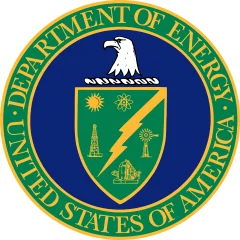
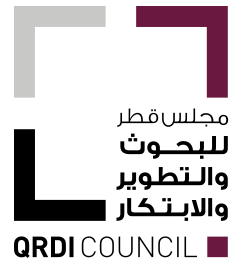
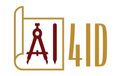

Research
My research focuses on wireless communications and sensing systems, leveraging AI/ML methods to develop intelligent and adaptive engineering solutions.
Research areas
Wireless communications
RF, mmWave, terahertz, optical, hybrid RF/optical, and satellite communication systems.
Wireless sensing
Non-contact optical sensing for gesture recognition and human–computer interaction; vital-signs monitoring of respiration, heart rate, and glucose.
Internet of Things
Livestock monitoring, soil monitoring, and related applications.
AI / ML
Supervised, unsupervised, and reinforcement learning; deep learning; large language models.
Sponsors and funding
- NSFCNS, ECCS, MRI, IIP, EAGER, I-Corps

DOEEarly Career, NETL, OESI NASAincluding EPSCoR
NASAincluding EPSCoR- DoDDARPA, AFOSR, USSOCOM, SERC
- U.S. DOTFRA, FAA, Tran-SET
- USGSU.S. Department of the Interior
- Research Council of Finlandwith NSF (VINES)

QNRFQatar National Research Fund (now QRDI Council) OpenAINextGenAI consortium
OpenAINextGenAI consortium NVIDIAGPU hours
NVIDIAGPU hours
AI4ID Consortium- IndustryJump Aero (for AFRL), Axeonis
Selected current projects

FORMULA3Project website
Self-adapting 6G networks in the 7–24 GHz FR3 band that combine AI, sensing, smart surfaces, and reflector arrays to predict blockage and keep links reliable indoors and outdoor-to-indoor.NSF & Research Council of Finland · 2026–2029
Related papers: J46, C51, C44, JR7, JR6, CR3


Substation protectionGunshot detection with acoustic sensing and AI to protect energy substations from physical attacks.
DOE NETL · 2025–2027
Related papers: to be added soon

mmWave radar health sensingNon-invasive multi-target blood-pressure monitoring with passive-beamforming FMCW radar.2025 · PCT application WO 2025/221680Related papers: P6
Selected completed projects

Intelligent track transitionsOptical fiber sensors that monitor rail track transitions, such as bridge-to-embankment zones, where track degrades fastest.
U.S. DOT FRA · 2023–2025
Related papers: to be added soon

6G experimental platformA versatile testbed for 6G-and-beyond communication and sensing research with software-defined radios and antenna arrays.NASA · 2022–2024Related papers: to be added soon
NASA · 2022–2024


All funded projects
30 awards · $10.9M total · 16 as PI
All funded projects: Full list by institution
Texas A&M University
- FORMULA3: Framework for Optimal Resource Management Using Generalizable AI in FR3 Dynamic Programmable Wireless EnvironmentsNSF & Research Council of Finland (VINES) · 2026–2029PI
- CommAwareNet: Towards Communication-Aware Smart Facilities: An Energy-efficient, High-data-rate and Reliable Hybrid RF/Optical Communication ArchitectureDOE Early Career Research Program · 2023–2028PI
- Pioneering the Next Spectrum Frontier: Transitioning Line-of-Sight Systems from Sub-10 GHz to Higher BandsNSF EAGER · 2025–2027PI
- Gunshot Detection Based Energy Substation Protection SystemDOE NETL · 2025–2027Co-PI
- Enhancing Safety of Offshore Lifting Equipment: Predictive Monitoring with mmWave Radar NDT, Robot and Digital Twin ModellingDOE / TEES Ocean Energy Safety Institute · 2025–2026Co-PI
- AI for Industrial Distribution (AI4ID) Consortium membership projectAI4ID Consortium · 2025–2026Co-PI
- Generative AI Literacy Center with NVIDIA Deep Learning Institute (GPU compute grant)NVIDIA · 2025PI
- Generative AI Literacy Center (NextGenAI Consortium)OpenAI · 2024–2026Co-PI
Transferred to Texas A&M from Oklahoma State
- SpiderNET: A Spectrally and Energy Efficient Data-Aided Demand-Driven Elastic Architecture for Future NetworksNSF ECCS (SpecEES) · 2019–2025PI
- Non-contact Monitoring of Respiration and Heart Rates Through Light-wave SensingNSF CNS Core · 2020–2024PI
- A Low-cost and Non-contact Respiration Monitoring Method for COVID-19 Screening and PrognosisNSF I-Corps · 2021–2025PI
- LunarCom: Hybrid RF/optical lunar communication architectureNASA · 2020–2023PI
- mmWave-based Future Dense Networks with UAV Backhauling: Channel Characterization, Performance Optimization, and AI-driven EnhancementQatar National Research Fund · 2021–2024PI
- Revitalizing Rural: Equipping Rural Communities with Technology Literacy for Seizing ProductivityNSF Smart & Connected Communities · 2021–2023Co-PI
- Acquisition of a Wideband Continuous-Wave Characterization PlatformNSF MRI · 2020–2023Co-PI
- FAA COE ILS Zone 3 MeasurementsDOT FAA · 2022–2023Co-PI
- Intelligent Track Transitions using Optical Fiber SensorsDOT FRA · 2023–2025Co-PI
- Versatile Experimental Platform for 6G and Beyond Communications and Sensing InnovationsNASA · 2022–2024Co-PI
Oklahoma State University
- TV white space and IoT connectivity for rural broadbandOSU VPR Tier 1 · 2019–2021PI
- Soil monitoring through UAV-assisted IoT wireless underground sensorsDOI USGS · 2020–2022PI
- ViLDAR: Visible-light detection and ranging for vehicle speed estimationDOT UTC Tran-SET · 2018–2019PI
- Low-power wide-range IoT livestock monitoringAxeonis LLC (donation) · 2018–2019PI
- Low-maintenance livestock monitoring via environment-powered IoTOSU President’s Cup · 2017PI
- Livestock monitoring customer discoveryNSF I-Corps Site · 2017–2018PI
- NASA EPSCoR projectNASA EPSCoR · 2017–2018PI
- DARPA projectDOD DARPA · 2022–2023Co-PI
- Defense University Research Instrumentation Program awardDOD AFOSR DURIP · 2020–2021Co-PI
- Project for the Air Force Research LaboratoryJump Aero Inc. (AFRL) · 2020–2021Co-PI
- Systems Engineering Research Center projectDOD SERC · 2019–2020Co-PI
- U.S. Special Operations Command projectDOD USSOCOM · 2018–2019Co-PI